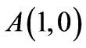

2026年北京市中考数学试卷 · 选择题 第6、7、8题
6. 再生水利用提升工程是北京市“十五五”时期美丽北京建设的重大工程之一．北京市一家在建的再生水厂建成后每天能够供应 高品质再生水．若一年按365天计．则该再生水厂建成后，一年能够供应的高品质再生水的总量用科学记数法表示应为（ ）
高品质再生水．若一年按365天计．则该再生水厂建成后，一年能够供应的高品质再生水的总量用科学记数法表示应为（ ）
A.  B.
B.  C.
C.  D.
D. 
7. 如图，点 在射线
在射线 上，在射线上截取
上，在射线上截取 ，分别以
，分别以 、为圆心，
、为圆心， 长为半径画弧，两弧相交于点
长为半径画弧，两弧相交于点 ．连接
．连接 ，
， ，则
，则 的大小为（ ）
的大小为（ ）

A.  B.
B.  C. D.
C. D. 
8. 在平面直角坐标系 中，点
中，点

， ．若点C不与点A重合，且以B，O，C为顶点的三角形与全等，则称C为B的“友好点”．给出下面四个结论：
．若点C不与点A重合，且以B，O，C为顶点的三角形与全等，则称C为B的“友好点”．给出下面四个结论：①对于所有的点B，在y轴上都有B的“友好点”；
②能够找到点B，使得在x轴上有B的“友好点”；
③对于所有的点B，在第一象限内都有B的“友好点”；
④能够找到点B，使得在第四象限内有B的“友好点”．
上述结论中，所有正确结论的序号是（ ）
A. ①③B. ①④C. ②③D. ②④